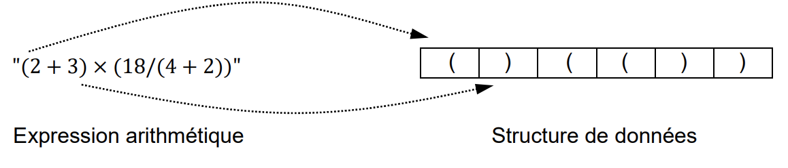
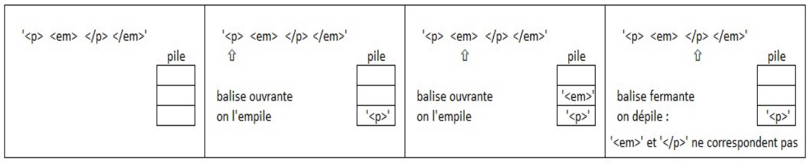
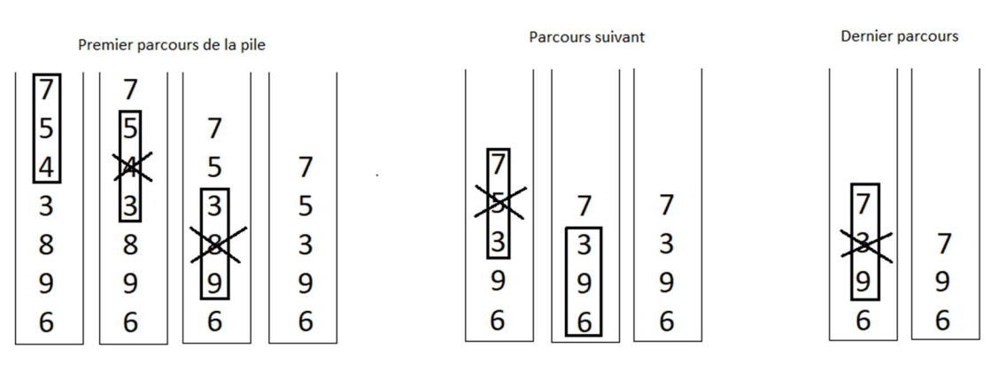
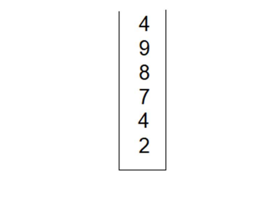
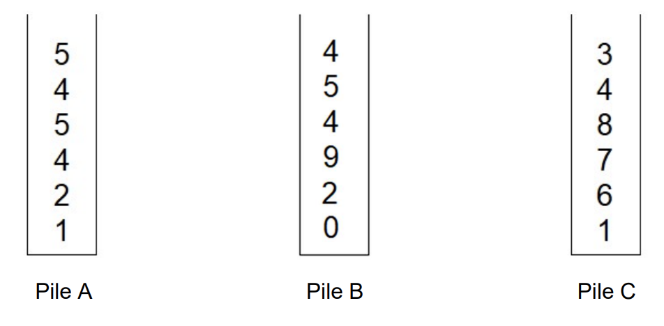

donnees structurees 1
Bac 2024 Asie J2: Exercice 2
Cet exercice porte sur la programmation orientée objet et les structures de données linéaires. POO pile
Cet exercice est composé de 2 parties indépendantes.
Dans cet exercice, on appelle parenthèses les couples de caractères (), {} et [].
Pour chaque couple de parenthèses, la première parenthèse est appelée la parenthèse ouvrante du couple et la seconde est appelée la parenthèse fermante du couple.
On dit qu’une expression (chaine de caractères) est bien parenthésée si:
- chaque parenthèse ouvrante correspond à une parenthèse fermante de même type ;
- les expressions comprises entre parenthèses sont des expressions bien parenthésées.
Par exemple, l’expression tab[2*(i + 4)] - tab[3] est bien parenthésée.
En revanche, l’expression tab[2*(i + 4] - tab[3) n’est pas bien parenthésée, car la première parenthèse fermante ] devrait correspondre à la dernière parenthèse
ouvrante (.
- Déterminer si l’expression
[2*(i+1)-3) for i in range(3, 10)]est bien parenthésée. Justifier votre réponse.
Partie A
On peut observer que, si les parenthèses vont par couple, une expression bien parenthésée contient autant de parenthèses ouvrantes que de parenthèses fermantes.
On se propose d’écrire une fonction qui vérifie si une chaine de caractères est bien parenthésée.
- Écrire une fonction
compte_ouvrantequi prend en paramètre une chaine de caractèrestxtet qui renvoie le nombre de parenthèses ouvrantes qu’il contient. - Écrire une fonction
compte_fermantequi prend en paramètre une chaine de caractèrestxtet qui renvoie le nombre de parenthèses fermantes qu’il contient. - En utilisant les deux fonctions précédentes, écrire une fonction
bon_comptequi prend en paramètre une chaine de caractèrestxtet qui renvoieTruesitxta autant de parenthèses ouvrantes que parenthèses fermantes etFalsesinon. - Donner un exemple de chaine de caractères pour laquelle
bon_compterenvoie True alors qu’elle n’est pas bien parenthésée.
Partie B
Comme l’algorithme précédent n’est pas suffisant, on se propose d’implémenter un algorithme utilisant une structure linéaire de pile.
On se propose d’écrire une classe Pile qui implémente la structure de pile.
- Compléter les lignes 9 et 14 du code précédent pour que la méthode
empilerpermette d’empiler un élémenteltdans une pile et que la méthode depiler permette de dépiler une pile en renvoyant l’élément dépilé. Vous n’écrirez que le code des deux méthodes.
Un algorithme permettant de vérifier si une expression est bien parenthésée consiste à:
- créer une pile vide
p; - parcourir l’expression en testant chaque caractère :
– si c’est une parenthèse ouvrante, on l’empile dans
p; – si c’est une parenthèse fermante, on dépilep;- si les deux caractères correspondent à un couple de parenthèses, on continue le parcours,
- sinon l’expression n’est pas bien parenthésée ; – sinon on continue le parcours.
Si l’expression a été entièrement parcourue, on teste la pile ; l’expression est bien parenthésée si la pile est vide.
-
Déterminer le nombre de comparaisons effectuées si on applique l’algorithme précédent à la chaine de caractères
tab[2*(i + 4)] - tab[3]. En déduire le nombre maximum de comparaisons effectuées si on applique l’algorithme précédent à une chaine de caractères de taille n (attention aux comparaisons de la classe pile). -
Écrire une fonction
est_bien_parentheseequi prend en paramètre une chaine de caractères et qui implémente l’algorithme précédent.
Bac 2022 Polynesie: Exercice 4
Cet exercice traite du thème « structures de données », et principalement des piles. POO pile
La classe Pile utilisée dans cet exercice est implémentée en utilisant des listes Python et propose quatre éléments d’interface :
- Un constructeur qui permet de créer une pile vide, représentée par
[]; - La méthode
est_vide()qui renvoieTruesi l’objet est une pile ne contenant aucun élément, etFalsesinon ; - La méthode
empilerqui prend un objet quelconque en paramètre et ajoute cet objet au sommet de la pile. Dans la représentation de la pile dans la console, cet objet apparaît à droite des autres éléments de la pile ; - La méthode
depilerqui renvoie l’objet présent au sommet de la pile et le retire de la pile.
Exemples :
La méthode est_triee ci-dessous renvoie True si, en dépilant tous les éléments, ils sont traités dans l’ordre croissant, et False sinon.
Question 1
Recopier sur la copie les lignes 6 et 8 en complétant les points de suspension.
On créé dans la console la pile A représentée par [1, 2, 3, 4]
Question 2
A. Donner la valeur renvoyée par l’appel A.est_triee().
B. Donner le contenu de la pile A après l’exécution de cette instruction.
On souhaite maintenant écrire le code d’une méthode depileMaxd’une pile non vide ne contenant que des nombres entiers et renvoyant le plus grand élément de cette pile en le retirant de la pile.
Après l’exécution de p.depileMax(), le nombre d’éléments de la pile p diminue donc de 1.
Question 3
Recopier sur la copie les lignes 9 et 11 en complétant les points de suspension.
On créé la pile B représentée par [9, -7, 8, 12, 4] et on effectue l’appel
B.depileMax().
Question 4
A. Donner le contenu des piles B et q à la fin de chaque itération de la boucle while de la ligne 5.
B. Donner le contenu des piles B et q avant l’exécution de la ligne 14.
C. Donner un exemple de pile qui montre que l’ordre des éléments restants n’est
pas préservé après l’exécution de depileMax.
On donne le code de la méthode traiter():
Question 5
A. Recopier le code avec la bonne indentation.
B. Donner les contenus successifs des piles B et q
- avant la ligne 3,
- avant la ligne 5,
- à la fin de l’exécution de la fonction traiter lorsque la fonction traiter est appliquée sur la pile B contenant
[1, 6, 4, 3, 7, 2].
C. Expliquer le traitement effectué par cette méthode.
Bac 2022 Metropole 1: Exercice 1
Cet exercice composé de deux parties A et B, porte sur les structures de données. pile
Partie A : Expression correctement parenthésée
On veut déterminer si une expression arithmétique est correctement parenthésée. Pour chaque parenthèse fermante “)” correspond une parenthèse précédemment ouverte “(”.
Exemples :
- L’expression arithmétique “(2 + 3) × (18/(4 + 2))” est correctement parenthésée.
- L’expression arithmétique “(2 + 3) × (18/(4 + 2” est non correctement parenthésée.
Pour simplifier les expressions arithmétiques, on enregistre, dans une structure de données, uniquement les parenthèses dans leur ordre d’apparition.
On appelle expression simplifiée cette structure.

1158 × 248
Question 1
Indiquer si la phrase « les éléments sont maintenant retirés (pour être lus) de cette structure de données dans le même ordre qu’ils y ont été ajoutés lors de l’enregistrement » décrit le comportement d’une file ou d’une pile. Justifier.
Pour vérifier le parenthésage, on peut utiliser une variable controleur qui :
- est un nombre entier égal à 0 en début d’analyse de l’expression simplifiée ;
- augmente de 1 si l’on rencontre une parenthèse ouvrante “(” ;
- diminue de 1 si l’on rencontre une parenthèse fermante “)”.
Exemple : On considère l’ expression simplifiée A : “( )( ( ) )”
Lors de l’analyse de l’expression A, controleur (initialement égal à 0) prend
successivement pour valeur 1, 0, 1, 2, 1, 0. Le parenthésage est correct.
Question 2
Écrire, pour chacune des 2 expressions simplifiées B et C suivantes, les valeurs successives prises par la variable controleur lors de leur analyse.
- Expression simplifiée B : " ((( )( )"
- Expression simplifiée C : “(( )))(”
Question 3
L’expression simplifiée B précédente est mal parenthésée (parenthèses fermantes
manquantes) car le controleur est différent de zéro en fin d’analyse.
L’expression simplifiée C précédente est également mal parenthésée (parenthèse
fermante sans parenthèse ouvrante) car le controleur prend une valeur
négative pendant l’analyse.
Recopier et compléter uniquement les lignes 13 et 16 du code ci-dessous pour
que la fonction parenthesage_correct réponde à sa description.
Partie B : Texte correctement balisé
On peut faire l’analogie entre le texte simplifié des fichiers HTML (uniquement constitué de balises ouvrantes et fermantes ) et les expressions parenthésées : Par exemple, l’expression HTML simplifiée :
"<p><strong><em></em></strong></p>" est correctement balisée.
On ne tiendra pas compte dans cette partie des balises ne comportant pas de
fermeture comme <br> ou <img …>.
Afin de vérifier qu’une expression HTML simplifiée est correctement balisé, on peut utiliser une pile (initialement vide) selon l’algorithme suivant :
On parcourt successivement chaque balise de l’expression :
- lorsque l’on rencontre une balise ouvrante, on l’empile ;
- lorsque l’on rencontre une balise fermante :
- si la pile est vide, alors l’analyse s’arrête : le balisage est incorrect ,
- sinon, on dépile et on vérifie que les deux balises (la balise fermante rencontrée et la balise ouvrante dépilée) correspondent (c’est-à-dire ont le même nom) si ce n’est pas le cas, l’analyse s’arrête (balisage incorrect).
Exemple : État de la pile lors du déroulement de cet algorithme pour l’expression simplifiée "<p><em></p></em>" qui n’est pas correctement balisée.

État de la pile lors du déroulement de l’algorithme - 1242 × 258
Question 4
Cette question traite de l’état de la pile lors du déroulement de l’algorithme.
A. Représenter la pile à chaque étape du déroulement de cet algorithme pour
l’expression "<p><em></em></p>" (balisage correct).
B. Indiquer quelle condition simple (sur le contenu de la pile) permet alors de dire que le balisage est correct lorsque toute l’expression HTML simplifiée a été entièrement parcourue, sans que l’analyse ne s’arrête.
Question 5
Une expression HTML correctement balisée contient 12 balises. Indiquer le nombre d’éléments que pourrait contenir au maximum la pile lors de son analyse.
Bac 2022 Metropole 2: Exercice 2
Cet exercice porte sur les structures de données. pile recursivité
La poussette est un jeu de cartes en solitaire. Cet exercice propose une version simplifiée de ce jeu basée sur des nombres.
On considère une pile constituée de nombres entiers tirés aléatoirement. Le jeu consiste à réduire la pile suivant la règle suivante : quand la pile contient du haut vers le bas un triplet dont les termes du haut et du bas sont de même parité, on supprime l’élément central.
Par exemple :
- Si la pile contient du haut vers le bas, le triplet 1 0 3, on supprime le 0.
- Si la pile contient du haut vers le bas, le triplet 1 0 8, la pile reste inchangée.
On parcourt la pile ainsi de haut en bas et on procède aux réductions. Arrivé en bas de la pile, on recommence la réduction en repartant du sommet de la pile jusqu’à ce que la pile ne soit plus réductible. Une partie est « gagnante » lorsque la pile finale est réduite à deux éléments exactement.
Voici un exemple détaillé de déroulement d’une partie.

1128 × 412
Question 1
A. Donner les différentes étapes de réduction de la pile suivante :

524 × 394

952 × 468
| Structure de données abstraite : Pile | |
|---|---|
creer_pile_vide() |
renvoie une pile vide |
est_vide(p) |
renvoie True si p est vide, False sinon |
empiler(p, element) |
ajoute element au sommet de p |
depiler(p) |
retire l’élément au sommet de p et le renvoie |
sommet(p) |
renvoie l’élément au sommet de p sans le retirer de p |
taille(p) |
renvoie le nombre d’éléments de p |
Question 2
La fonction reduire_triplet_au_sommet permet de supprimer l’élément
central des trois premiers éléments en partant du haut de la pile, si l’élément du bas et du haut sont de même parité. Les éléments dépilés et non supprimés sont replacés dans le bon ordre dans la pile.
Recopier et compléter sur la copie le code de la fonction
reduire_triplet_au_sommet prenant une pile p en paramètre et qui la
modifie en place. Cette fonction ne renvoie donc rien.
Question 3
On se propose maintenant d’écrire une fonction parcourir_pile_en_reduisant qui parcourt la pile du haut vers le bas en procédant aux réductions pour chaque triplet rencontré quand cela est possible.
A. Donner la taille minimale que doit avoir une pile pour être réductible.
B. Recopier et compléter sur la copie :
Question 4
Partant d’une pile d’entiers p, on propose ici d’implémenter une fonction récursive jouer renvoyant la pile p entièrement simplifiée. Une fois la pile parcourue de haut en bas et réduite, on procède à nouveau à sa réduction à condition que cela soit possible. Ainsi :
- Si la pile p n’a pas subi de réduction, on la renvoie.
- Sinon on appelle à nouveau la fonction jouer , prenant en paramètre la pile réduite.
Recopier et compléter sur la copie le code ci-dessous :